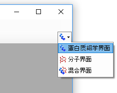
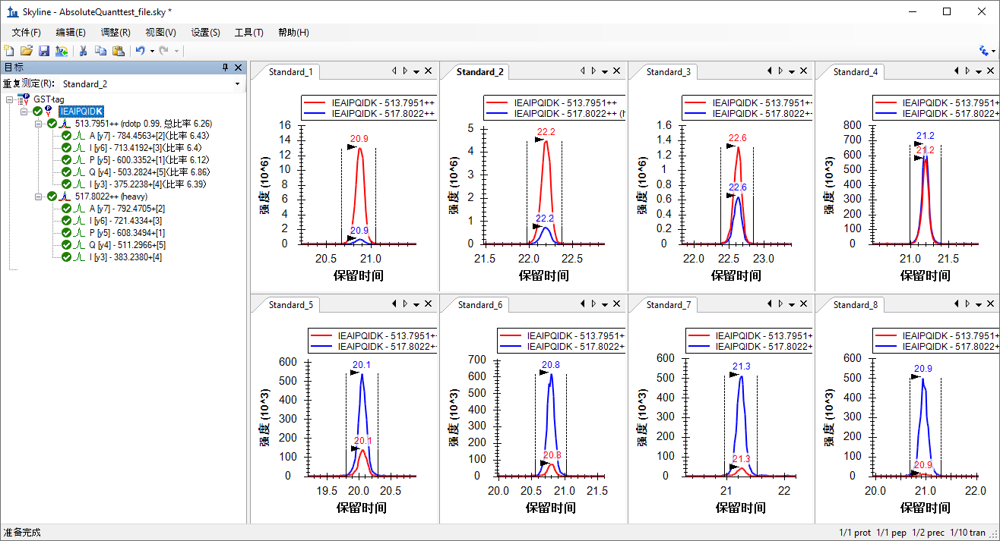
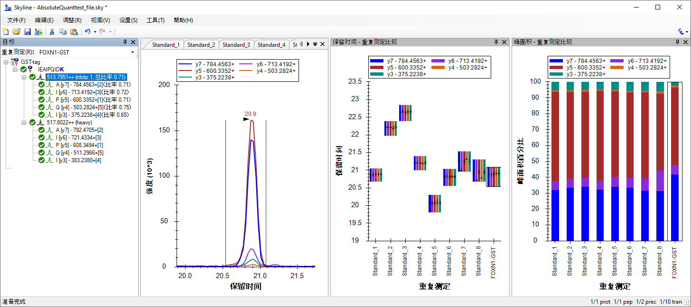
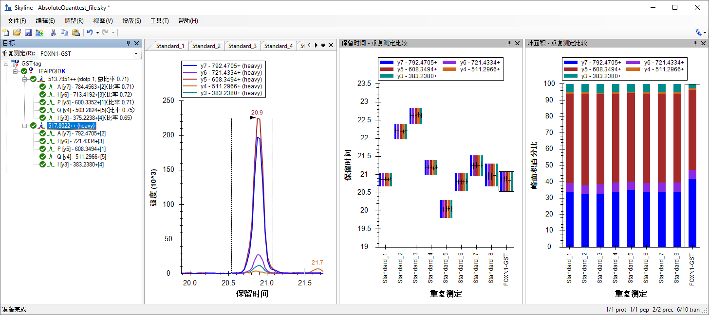
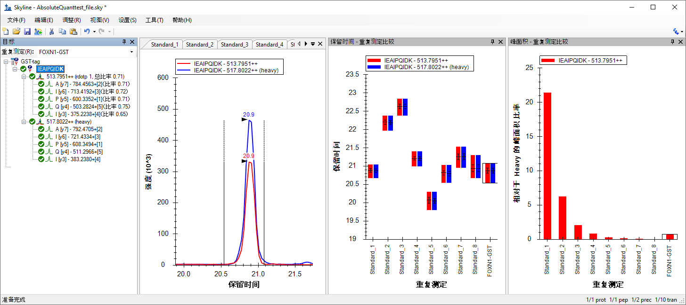
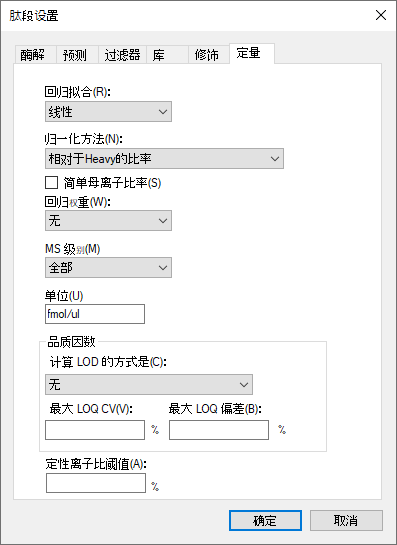
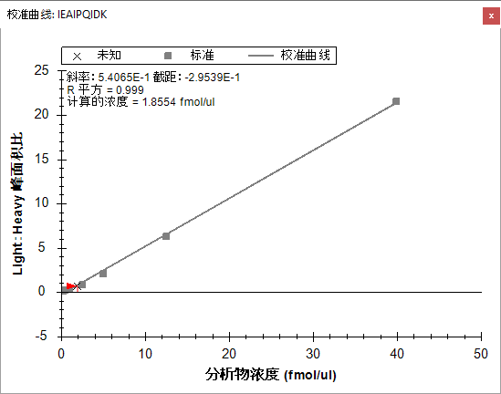

本教程介绍如何使用“选择性反应监测”（SRM）质谱法确定目标蛋白质的绝对丰度。具体而言，我们将演示如何使用带有重肽内标的外部校准曲线进行归一化。
肽段的绝对丰度测量值可以使用单点或多点校准来获取。单点内标测量绝对丰度的方法是将已知丰度的目标肽段的“标准”重肽版本加入到目标样品后，计算样品中目标轻肽与“标准”目标重肽的相对丰度来得到“样品”中目标肽段的绝对丰度1。该方法的缺点之一是，假设轻重比为 2，意味着轻肽的丰度实际上是重肽的两倍 – 这是认为肽段响应的斜率为 1。此外，使用单点内部校准的方法时基于这样一种假设：轻肽和重肽在质谱检测仪中的响应均在线性范围内。然而，这些假设并不总是正确的2,3,4,5。
多点外部校准实验可纠正肽段响应斜率不为 1 的情况。测量多个已知丰度的“标准”肽段校准点的信号强度并生成校准曲线，可完成校准。对于样品中此肽段的信号强度，可使用该校准曲线来计算目标肽段在样品中的浓度3。该方法的缺点之一是需要多次进样质谱仪来生成校准曲线。
为了使用外部校准曲线时提高绝对丰度测量的精度，往往使用稳定同位素标记的内标6。肽段离子强度的测量不精确的问题，通常源自样品制备、自动进样器或色谱的不规则性。通过向每个校准物和样品中添加相同量的标准重肽，可以测量校准物与标准重肽比值或样品与标准重肽比值，即归一化。由于该比值不受样品制备、自动进样器或色谱不规则性的影响，因此这种方法更好。所以，通过使用外部校准曲线进行肽段的绝对定量及对内标重肽进行归一化，可获得最准确、最精密的测量结果，同时最大程度减少宝贵样品的必须使用量。
本教程将结合 Stergachis 等人发表的数据7，使用 GST 标签中具有“蛋白特征性”的肽段来测量含 GST 标签的蛋白质的绝对丰度（教程图 1A）。对于任何绝对定量的实验，必须先确定一种或多种用于定量目标蛋白质的“蛋白特征性”肽段。由于肽段 IEAIPQIDK相对于其他含 GST 标签的胰蛋白酶肽段有较强的信号强度（未发表），因而被确定具有“蛋白特征性”。而且，与其他人类谷胱甘肽的结合蛋白不同，该肽段能独特地识别血吸虫 的GST 标签。
在该实验中，使用体外转录/翻译产生了包含框内 GST 标签的 FOXN1 蛋白，并使用谷胱甘肽树脂纯化全长蛋白（教程图 1B）。然后将重肽 IEAIPQIDK 加标到洗脱缓冲液中，酶解后在 Thermo TSQ Vantage 三重四极杆质谱仪上使用选择性反应监测 (SRM)分析样品。使用不同数量的轻肽 IEAIPQIDK（生成的纯度 > 97％）生成外部校准曲线，并通过氨基酸分析确定浓度。重肽 IEAIPQIDK 也按照与 FOXN1-GST 样品中相同的浓度加标到这些校准物中（教程图 1C）。务必注意的是，只要每个样品中的重肽浓度相同，那么浓度的高低便毫无关系。不过，样品中的重肽量与源自 FOXN1-GST 的轻肽量相似时最佳。同样，使源自 FOXN1-GST 的轻肽浓度处于使用不同校准物测试的浓度范围中间时最佳。
教程图 1. 实验概述
(A) 血吸虫 GST 标签的蛋白序列。红色表示用于定量用途的胰蛋白酶肽段。
(B) 标记蛋白的合成、富集、酶解和分析示意图。
(C) 监测样品及每个样品中 IEAIPQIDK 轻肽/重肽的丰度。
开始本教程之前，请下载下列 ZIP 文件：
https://skyline.ms/tutorials/AbsoluteQuant.zip
将文件解压到您电脑上的某个文件夹，比如：
C:\Users\absterga\Documents
该操作将创建一个新文件夹：
C:\Users\absterga\Documents\AbsoluteQuant
如果您在开始学习本教程之前就一直在用 Skyline，最好将 Skyline 恢复为默认设置，操作如下：

该 Skyline 实例中的文档设置现已重置为默认值。
由于本教程涉及蛋白质组主题，因此您可以执行以下操作来选择蛋白质组界面：

Skyline 将在蛋白质组模式下运行，Skyline 窗口的右上角随之显示蛋白质图标 。
。
现在，您应当会看到 Skyline 中出现的新空白文档。
在向 Skyline 中插入肽段序列前，务必要为此实验正确配置所有肽段和离子对设置。下述设置是针对标记为 13C615N2 L-赖氨酸的内标肽段而设计的。如果您使用其他同位素，请在“肽段设置”配置中选择相应的同位素修饰。
该表单现在应显示如下：

| 注意：通常需要选择与 yn-1（对于本实验中使用的 IEAIPQIDK 等 9 氨基酸肽段，则选择 y8）等效的“最后一个离子”。不过，鉴于它与 "n-1" 之间容易混淆，本实验使用了“最后一个离子 - 1”。 |
离子对设置表单现在应显示如下：

此时编辑同位素修饰表单应显示如下：

肽段设置表单现在应显示如下：

由于实验使用的是内标重肽，因此内部标准类型下拉列表可以保留默认的 heavy。

完成上述步骤后，Skyline 主页面现在应显示如下：

在导出您的第一个离子对列表前，先将您的文档保存至 AbsoluteQuant 文件夹，操作如下:
如果您是自己在质谱仪上进行此实验，则需要采用相应的仪器方法。利用模板的方法，Skyline 可直接导出生成仪器方法，但这里是将导出离子对列表，您可在其他时间将此表导入到仪器方法的模板里。为此，请执行以下操作：
随即显示如下所示的导出离子对列表表单，基于您从离子对设置–预测选项卡中的碰撞能量下拉列表中选择的 "Thermo TSQ Vantage" 值，仪器类型列表中自动选择了 "Thermo"。

您还可看到其他所有设置都适合于这个非常简单的目标列表。
生成的离子对列表已导入 Thermo TSQ Vantage 三重四极杆质谱仪的模板方法文件。现在，您可以在 Excel 或文本编辑器中打开生成的 GST-tag.csv 文件，以查看它的情况。
在这一节中，您将处理教程图 1C 中指示的九个样品。您将向 Skyline 中导入 .RAW 文件以查看数据。数据将导入到上一节中生成且已保存的 Skyline 文档中。所需导入的文件已包含在为本教程创建的 AbsoluteQuant 文件夹中，且命名为：
这些 RAW 文件以随机顺序收集，并分散在大量的数据采集中。在原始论文 (http://proteome.gs.washington.edu/supplementary_data/IVT_SRM/Supplementary%20Data%202.sky.zip) 的补充数据 2 中可以找到使用 Skyline 进行完整处理的结果。
在查看 FOXN1-GST 样品前，应先熟悉这些标准。
导入结果表单应显示如下：


Skyline 可能需要一些时间才能导入所有 RAW 文件。
为确保每种标准都获得良好的色谱峰，最好在平铺视图中查看彼此相邻的所有色谱图。为获取这种布局，请执行以下操作：
对于每个标准，您会在界面中同时看到轻（红色）重（蓝色）总色谱图，如下所示：

查看标准的色谱痕量时所要检查的内容：
接下来，您需按照与上述相同的说明将 FOXN1-GST.RAW 文件导入当前的 Skyline 文档。
为确保被测样品看起来良好，请检查色谱痕量、碎断图式以及重峰和轻峰的保留时间。为此，您需要显示汇总图，如下所示：
为便于查看，按如下方式排列窗口：
然后，您可以选择任何一种轻母离子：

或是选择重母离子：

验证以下项：
如果情况并非如此，可能是为其中一个样品选择了错误的峰，或者离子对可能受到明显干扰。
查看数据的另一种方法如下：
峰面积图中显示的值就是稍后在校准曲线中使用的值。从该图很容易看出，FOXN1-GST 样品的轻重比居于校准点比率的中间位置。这是理想的状态，因为校准曲线中的这一部分最适合定量的用途。

在本教程中，您将在 Skyline 中创建一条校准曲线。
肽段设置表单应显示如下：

| 标准 | 40 |
| 标准 | 12.5 |
| 标准 | 5 |
| 标准 | 2.5 |
| 标准 | 1 |
| 标准 | 0.5 |
| 标准 | 0.25 |
| 标准 | 0.1 |
文档网格：重复测定表单应显示如下：
您应当看到如下所示的图：

斜率和截距显示在校准曲线上。使用标准的 y = m * x + b 方程式可以在峰面积比和浓度之间进行转换
（浓度 = 斜率 * 比率 + 截距）
另外，当前选择的重复测定样本的计算浓度也显示在校准表上。此处得到未知样品的浓度为 1.8554 fmol/ul。
本教程介绍了不同绝对丰度实验方法的优点，演示了如何使用带有内标重肽的外部校准曲线来确定绝对丰度，以便在分析物丰度极低的情况下也能定位到正确的积分范围并进行归一化。该方法可提供精准的绝对测量值，同时最大程度减少实验期间必须使用的宝贵样品量。